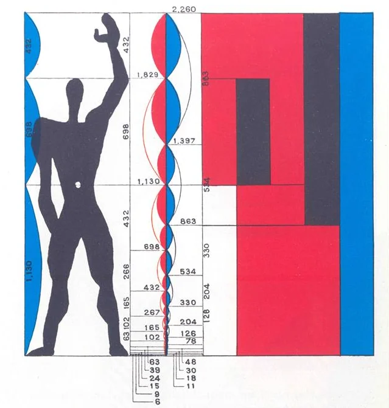
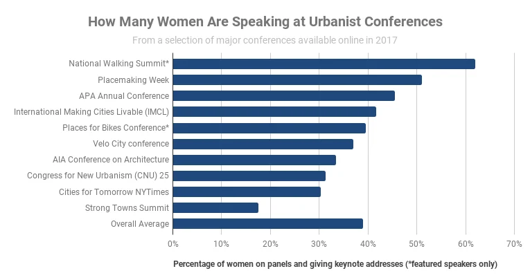
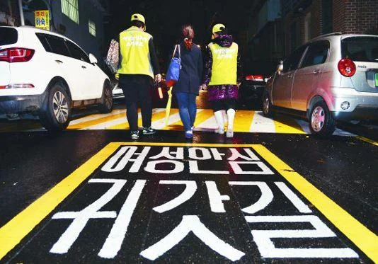
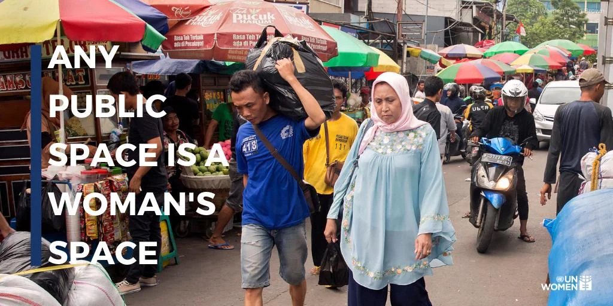
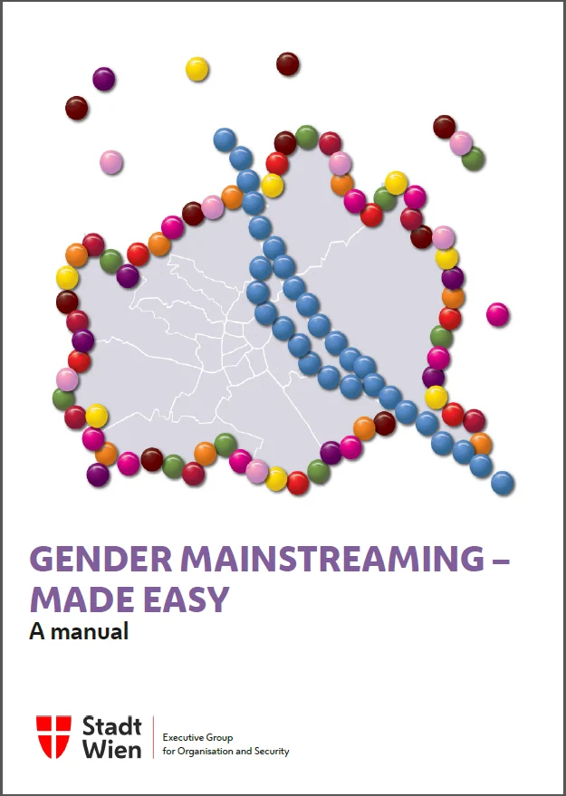
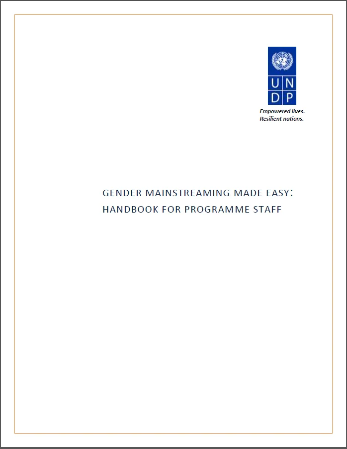
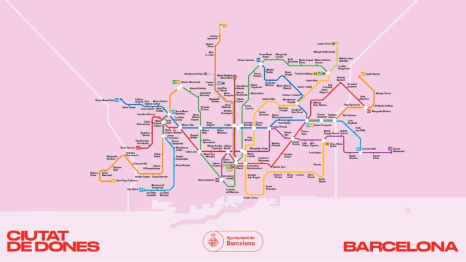
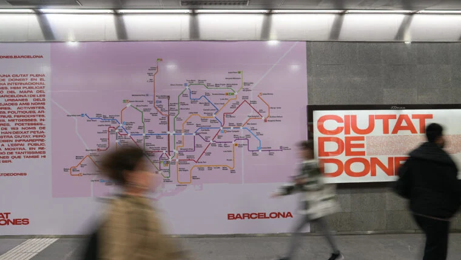
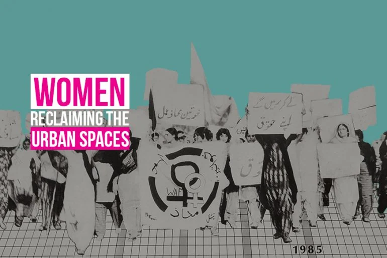

여성친화 공공디자인
Female Public Design
“ Humanist Cities by Female Public Design ”
디자인의 표준척도에서 보는 남성 중심 디자인
그림 1 모둘러 Le Modulor, 1945 © FLC / ADAGP

1943년 프랑스 국립표준화기구 AFNOR의 건축 표준화 기준을 마련해 달라는 요구에 부응하여 1945년 르 코르뷔지에는 공간을 디자인하는 데 있어 인간척도 기준인 '모듈러(Modulor)'를 발표합니다. 모듈러는 사람이 살기 편한 공간을 만들기 위해 인간의 신체 기준을 표준화한 것인데 초기 모듈러의 수치는 프랑스 남성의 평균 신장인 175cm(5ft 9in)를 기준으로 만들었으나 1946년 영국 남성 경찰관의 신장인 183cm를 기준 삼아 최종적으로 제안되었습니다. 이렇게 초기 표준안이 남성 중심으로 제시된 것에 대해 Robin Evans는 여성의 신체 기준의 미적용에 대한 비평을 하기도 했습니다. 이처럼 여성 친화 도시디자인은 도시의 디자인이 중립적이지 않고 우리의 도시와 근린공간이 가부장적 사회의 가치에 의해 형성되었다는 전제에서 출발합니다. 도시의 물리적 공간 구성은 표준화된 특정 모델을 중심으로 영속화하고 재생산됐습니다. 이에 다양한 가치를 중심으로 하는 새로운 도시디자인의 관점은 그동안 배제되었던 사람들의 삶을 도시디자인의 중심에 둘 것을 제안하고 있습니다.
디자인 대상으로써의 여성이 아닌 주체로서의 여성
근대시대이던 근세, 중세시대이던 여성은 사회활동에 있어 사회적 또는 정치적으로 평등하거나 유리한 상황에 있지 못했다는 것은 사실이다. 우리의 도시, 거리, 건물, 공간 등 눈에 보이는 거의 모든 도시 요소들이 여성에 의해 디자인되었다고 볼 수는 없습니다.
미국 필라델피아에 기반을 둔 도시 인류학자인 Katrina Johnston-Zimmerman는 여러 문헌 자료 분석을 통해 남성 중심의 편중된 도시디자인의 여러 사실을 얘기하고 있습니다. Routledge의 Urban Reader Series인 the City Reader에는 66명의 도시전문가가 중 6%인 4명만이 여성이고 University of Minnesota Press에서 2006년에 발행한 Harvard Design Magazine Reader인 Urban Planning Today에는 13명의 기고자 중 2명만이 여성입니다. Planetizen이 선정한 최고의 도시 계획 디자인 서적 20권에는 여성이 쓴 단 두 권의 책 Jane Jacobs의 The Death and Life of Great American Cities와 Rachel Carson의 Silent Spring만이 포함되어 있습니다. 2017년 "역대 가장 영향력 있는 도시전문가" 목록에서 여성은 17%에 불과합니다. 또한, Katrina Johnston-Zimmerman는 본인의 도시 인류학 연구에서 수집한 100개 이상의 중요한 도시 관련 텍스트와 트렌드 중에서 여성에 의한 것은 20% 미만이라는 것을 밝히고 있습니다.
그림 2 WLC_Conference_hart © Katrina Johnston

현실에서는 많은 여성 계획가와 디자이너들이 활동하고 있습니다. 미국건축등록위원회(NCARB)가 2017년 발표한 보고서에 따르면 건축과 졸업생의 42%가 여성이었고 2016년 도시계획 대학원생 중 52%가 여성이었습니다. 또한, 미국의 상위 100개 도시 중 약 25%가 여성 시장입니다. 우리나라도 특히 전문가 비중에서는 여성의 비율이 커지고 있는 것은 사실이고 대학원과 같은 고등 교육의 구성원 비율도 마찬가지입니다.
그림 3 여성안심귀갓길 © 국민생각함

우리 도시의 여성 관련 디자인은 여성을 디자인의 주체가 아닌 대상이자 약자로 규정하고 안전과 관련한 CCTV 설치, 조도 개선, 가로등 설치, CPTED(범죄예방 환경설계) 도입 등 물리적 환경개선에 집중된 경향이 있습니다. 정책가, 행정가, 전문가로서 도시를 운영하고, 도시에 대해 가르치고 도시를 디자인하는 기회를 통해 영향력 있는 여성의 영역을 마련하여 서비스 공급자이자 주체로서 여성 중심 디자인이 제공되는 것도 중요합니다. 여성이 주도적으로 참여해 그간 배제되어온 여성 관점의 도시 공공디자인을 증진시키는 여성 친화 공공디자인의 효과성을 높이는 방안에 대해서도 논의가 시작되어야 합니다.
여성을 위한 도시디자인은 휴머니즘 도시이다
그림 4 Any Public Sapce is a Woman’s Space © unwomen.org

권리나 페미니스트라는 어려운 얘기를 떠나서 도시에 있는 다양한 구성원들이 동일한 가치를 공유하고 서로 반대에 있는 구성원들이 의미 있는 방식으로 다른 일련의 경험을 이해하는 이러한 다양한 도시 상호작용은 우리가 도시를 읽는 방식과 그 문제를 해결하는 접근 방식을 알려줍니다. 디자이너들이 형평성을 염두에 두고 디자인을 하고 있지만, 사용자에 의해 부족함이 발견되는 것은 어려운 일은 아닙니다. 여성 친화 공공디자인을 위해 여성이 참여하고 주도하는 도시는 성별 정체성, 모든 능력, 연령 및 다문화 배경을 통합할 가능성을 제공할 수 있을 것입니다.
그림 6 비엔나시 젠더 주류화 매뉴얼집 ©wien.gv.at

그림 5 GENDER MAINSTREAMING MADE EASY: HANDBOOK ©undp.org

일부 국제적인 도시들은 이러한 여성 중심 디자인을 적용하고 있는데 오스트리아 비엔나에서는 여성 친화 도시를 만들기 위해 UN 이니셔티브에 기반을 둔 "Gender Mainstreaming, 젠더 차별 철폐 및 주류화 "의 개념을 사용합니다. Gender Mainstreaming 조성을 위해 대중교통에 대한 조사에서 대부분 남성은 아침에 출근하고 밤에 집에 오기 위해 하루에 두 번 자동차나 대중교통을 이용한다고 하였지만, 여성들은 도시의 보행공간, 버스, 지하철 등의 사용에 있어 훨씬 더 다양한 패턴을 보였습니다. 예를 들어 여성들은 아침에 일하러 가기 전에 아이들을 유치원이나 학교에 데려다주고 나중에는 식료품을 사고 아이들을 지하철로 집으로 데려다주고 있었습니다. 여성은 남성보다 대중교통을 더 자주 이용했고 도보로 더 많이 이동하였고 여성들은 남성보다 아이들과 노부모 등 가족 사이에서 시간을 나누는 비율이 더 높았습니다. 이를 위한 이동성과 대중교통 접근성을 개선하는 것은 도시 공공디자인이 해야 할 중요한 역할입니다. 이렇듯 공공 영역에서 성별에 대한 행태와 차별을 고려하는 것을 목표로 현재까지 60개 이상의 파일럿 프로젝트가 수행되었습니다. 특히 도시와 공공공간을 디자인하는 데 있어 남성과 여성이 도시 공간을 사용하는 방법을 특성화하려고 시도할 때 고정관념이 강화될 위험이 있음을 고려해 시 공무원들은 젠더 주류화 개념을 '공정한 공유 도시'라는 어휘로 사용하고 있습니다.
그림 7 Barcelona, City of Women ©www.barcelona.cat

또한, UN Habitat III에서 바르셀로나와 파리의 여성 시장이었던 Ada Colau와 Anne Hidalgo는 도시에서 모든 시민의 요구가 충족되도록 보장하기 위해 New Urban Agenda에 포함될 도시에 대한 권리 개념을 추진했었습니다. 특히 바르셀로나 최초의 여성 시장인 Ada Colau는 “지금 우리는 여성들이 도시의 주인공이 될 기회가 있습니다.”라고 말하며 정책에서 커뮤니티 개발, 거리 예술가, 건축가, 도시 계획/디자인/연구 등의 도시화의 모든 측면에서 진정한 여성 중심 도시를 시작하는 것을 얘기하고 특권 없이 여성들에 의한, 그리고 여성들을 위한 도시의 디자인 및 관리를 달성하는 것을 강조하였습니다. 특히 올해 3월 바르셀로나에서는 여성의 도시 이니셔티브의 일환으로 공공장소에서 여성의 주요 공헌과 공공공간에서 여성 대표성을 강화하기 위한 새로운 시 캠페인이 시작되었습니다. 바르셀로나 153개 역에는 여성의 이름이 부여되어 여성이 도시에 남긴 문학, 스포츠, 정치 및 지역 사회 활동 등의 역사적 흔적을 강화하고 여성의 이름을 딴 16개의 공공공간도 마련되어 도시내 여성의 대표성을 강화하고 있습니다.
그림 8 Barcelona, City of Women © www.barcelona.cat

누군가를 배려한다는 것의 의미
우리의 도시디자인, 공공디자인은 공공가치를 구현하기 위해 다양한 사용자에 관해 이야기하고 있습니다. 이를 위해 장애, 세대, 출신, 성적 정체성, 거주하는 동거 단위의 유형, 사회 계층 등과 같은 다양한 정체성을 고려하여 공공공간에서 어떤 문제가 발생하고 어떤 형태로 구체화되는지 고려하여 디자인에 적용하고자 합니다. 하지만 이러한 배려의 공공공간을 디자인하는 데 있어 어린아이들, 청소년, 동성애자, 외국인, 80세 고령자가 공공장소에서 경험하는 것은 동일하지 않습니다. 그들은 서로 다른 경험과 요구를 가지고 다른 방식으로 공간을 살고 있으므로 사람들 경험의 다양성을 통합하고 이러한 경험과 요구가 모든 도시 프로세스 및 프로젝트에 주체적인 역할 참여를 통해 이루어져야 합니다. 소위 배려의 디자인은 그들을 위한 디자인이 아닌 디자인의 권리를 그들에게 부여하는 것 부터 시작되어야 합니다.
그림 9 Women reclaiming the urban spaces © RTF | Rethinking The Future

도시를 위한 디자인도 소수의 집단대표에 의해 진행되어 온 것은 아닌지 검토해 보아야 합니다. 다양한 구성원을 위한 디자인이 다양한 구성원 없이 진행된 것은 아닌지 그리고 디자인을 구성하는 과정이 경제 논리와 특정 이해관계를 통해 결정되고 우리 도시를 형식화한 시스템에만 기대어 대부분 도시가 동질적인 지역이 된 것은 아닌지 살펴보아야 합니다. 여성 친화 디자인은 여성이 안전의 대상만이 아닌 여성에 의한 디자인이 결정될 수 있는 다양한 방법론을 도입하여 진행 되어야 합니다. 이는 다만 여성을 위한 디자인이 아닌 자신과 타인을 배려하고 교류와 상조의 공공공간을 조성하여 공공가치를 향상시키는 배려디자인의 모델을 보여줄 것입니다. 동일한 문제를 해결하기 위해 노력해 온 동일한 사람들이 테이블 주위에 있다면 아무것도 변하지 않을 것입니다. 진정한 배려를 위한 여성 친화 디자인은 문제의 해결을 위해 구성원이 참여하는 것뿐만 아니라 운영에 참여하고 권리와 의무를 지고 결정에 참가하며 이끌어가는 것이 중요합니다.
“ If women’s rights are human rights, it stands to reason that a feminist city is a humanist city.”
참고문헌
https://nextcity.org/features/urban-planning-sexism-problem
https://www.right2city.org/news/espanol-que-es-el-urbanismo-feminista/
https://www.bloomberg.com/news/articles/2013-09-16/how-to-design-a-city-for-women